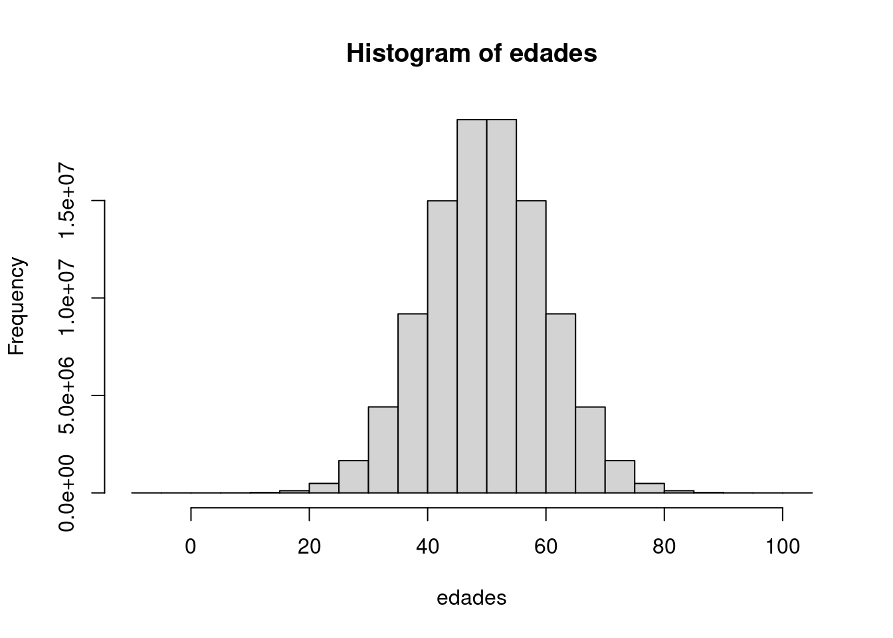

# Fijamos una semilla aleatoria común, para que todos tengamos el mismo resultado
set.seed(2023)Vectores
EJEMPLO - El poder de los vectores en R
Lo que hemos visto hasta ahora no impresiona mucho, puesto que todas las operaciones que hemos visto se pueden realizar de una manera tan sencilla (o incluso más) utilizando otras herramientas, como las hojas de cálculo.
La verdadera potencia de R aparece cuando queremos aplicar las acciones que hemos aprendido con valores individuales a toda una población.
Imaginemos el siguiente escenario:
| + Tenemos que planificar una campaña de vacunación para mayores de 65 años, y necesitamos saber EXACTAMENTE cuántos individuos tienen esa edad o más. + Para ello, crearemos una variable lógica consistente en otro vector con el resultado de comprobar si es mayor o igual que 65 cada uno de los elementos del vector edades |
Pregunta: ¿Cuántos individuos hay en nuestra población con 65 o más años?
EJEMPLO - Uso vectorizado de la aritmética de variables ‘logical’ para identificar valores que cumplen una condición
Seguiremos la metodología de análisis sistemático de datos, para responder a este ejemplo.
PASO 1 - Ingesta de datos
Como no tenemos la base de datos real, simularemos una distribución de edades para el ejemplo
- En primer lugar, fijaremos una semilla aleatoria, para que todos los alumnos obtengamos el mismo resultado.
- Utilizaremos la función
rnorm(), para simular la distribución de la edad de una población de un millón de habitantes
# Creamos el vector de edades
edades <- rnorm(
n = 100000000, # Número de individuos
mean = 50, # Media de edad de la población
sd = 10 # Desviación estándar
)PASO 2 - Limpieza de datos
Nuestros datos sólo necesitan el vector de edades, así que no necesitamos limpiar nada
PASO 3 - Exploración de los datos
No tenemos ni idea de cómo está distribuida la población que hemos creado, así que vamos a explorarlo mediante un histograma para comprobarlo con la función hist()
hist(edades)
PASO 4 - Análisis
Tenemos que planificar una campaña de vacunación para mayores de 65 años, y necesitamos saber EXACTAMENTE cuántos individuos tienen esa edad o más.
Para ello, crearemos una variable lógica
esMayor65 <- edades >= 65Para saber el número de individuos que son mayores de 65, sólo tenemos que sumar todos los elementos del vector, puesto que:
- Los valores
TRUE(que son >=65) son equivalente a 1, y - Los valores
FALSE(que son <65) son equivalentes a 0
sum(esMayor65)[1] 6680293PASO 5 - Informe
Hay 6680293 individuos con 65 años o más en nuestra población en el instante actual, señor Consejero.
EPÍLOGO - Limpieza de memoria y de entorno
Como los vectores creados en este ejemplo son muy grandes, limpiaremos la memoria en este punto para no lastrar el rendimiento de R en el resto del documento.
# Limpieza de memoria
rm(edades)
rm(esMayor65)
gc()Los vectores en R
Los vectores son objetos de R que almacenan varios elementos del mismo tipo en un único contenedor.
Pueden contener cualquiera de los tipos de elementos vistos en el apartado anterior, pero siempre deben ser del mismo tipo.
Creación de vectores
BÁSICO - Creación de vectores con
c()
Los vectores se crean con la función c(), con los valores separados por una coma.
# Creación de vectores con `c()`
## logical
esElfo <- c(FALSE, TRUE, FALSE, FALSE, FALSE, FALSE, FALSE)
## numeric
porcentaje <- c(35.5, 4.5, 5.25, 14.75, 14.9, 5.1, 20)En el caso de los vectores de tipo character, cada elemento debe ir entre comillas dobles (") o simples (').
# Creación de vectores con `c()`
## character
raza <- c('Humano', 'Elfo', 'Hobbit', 'Enano','Orco', 'Ent', 'Troll')En el caso de los vectores de tipo integer, cada elemento debe terminar con una L mayúscula.
# Creación de vectores con `c()`
## Si colocamos una L detrás de cada elemento, se creará un vector de tipo integer
numeroOrejas <- c(2L, 2L, 2L, 2L, 2L, 0L, 0L)
class(numeroOrejas)[1] "integer"Si no se hace así, el vector se creará con tipo numeric.
# Creación de vectores con `c()`
## Si no ponemos L en todos los elementos, se creará un vector de tipo numeric
numeroOrejas <- c(2L, 2L, 2L, 2L, 2L, 0, 0)
class(numeroOrejas)[1] "numeric"
BÁSICO - Creación de vectores con
rep()`
Se pueden crear vectores repitiendo la secuencia de un vector utilizando la función rep()
Consideraremos para el tutorial un vector de ejemplo num de tres elementos:
num <- c(1, 2, 3)El caso por defecto corresponde a la siguiente configuración:
## Caso por defecto
rep(
x = num,
times = 1,
length.out = NA,
each = 1
)[1] 1 2 3Se pueden especificar los siguientes argumentos:
| Parámetro | Tipo | Descripción |
|---|---|---|
x |
Objeto | Elemento que debe repetirse |
times |
Entero positivo | Número de veces que debe repetirse cada elemento de x (si length(x) > 1), o Número de veces que debe repetirse un vector (si length(x) = 1) |
length.out |
Entero positivo | Longitud deseada del vector |
each |
Entero positivo | Cada elemento de x es repetido each veces |
Si se especifica un valor para times o para length.out junto a each, se ejecuta la replicación marcada por eachen primer lugar, y posteriormente la determinada por times o length.out.
Caso 1 - Replicar cada elemento del objeto x un número each de veces, repitiendo el proceso times veces
rep(
x = num,
times = 100,
each = 2
) [1] 1 1 2 2 3 3 1 1 2 2 3 3 1 1 2 2 3 3 1 1 2 2 3 3 1 1 2 2 3 3 1 1 2 2 3 3 1
[38] 1 2 2 3 3 1 1 2 2 3 3 1 1 2 2 3 3 1 1 2 2 3 3 1 1 2 2 3 3 1 1 2 2 3 3 1 1
[75] 2 2 3 3 1 1 2 2 3 3 1 1 2 2 3 3 1 1 2 2 3 3 1 1 2 2 3 3 1 1 2 2 3 3 1 1 2
[112] 2 3 3 1 1 2 2 3 3 1 1 2 2 3 3 1 1 2 2 3 3 1 1 2 2 3 3 1 1 2 2 3 3 1 1 2 2
[149] 3 3 1 1 2 2 3 3 1 1 2 2 3 3 1 1 2 2 3 3 1 1 2 2 3 3 1 1 2 2 3 3 1 1 2 2 3
[186] 3 1 1 2 2 3 3 1 1 2 2 3 3 1 1 2 2 3 3 1 1 2 2 3 3 1 1 2 2 3 3 1 1 2 2 3 3
[223] 1 1 2 2 3 3 1 1 2 2 3 3 1 1 2 2 3 3 1 1 2 2 3 3 1 1 2 2 3 3 1 1 2 2 3 3 1
[260] 1 2 2 3 3 1 1 2 2 3 3 1 1 2 2 3 3 1 1 2 2 3 3 1 1 2 2 3 3 1 1 2 2 3 3 1 1
[297] 2 2 3 3 1 1 2 2 3 3 1 1 2 2 3 3 1 1 2 2 3 3 1 1 2 2 3 3 1 1 2 2 3 3 1 1 2
[334] 2 3 3 1 1 2 2 3 3 1 1 2 2 3 3 1 1 2 2 3 3 1 1 2 2 3 3 1 1 2 2 3 3 1 1 2 2
[371] 3 3 1 1 2 2 3 3 1 1 2 2 3 3 1 1 2 2 3 3 1 1 2 2 3 3 1 1 2 2 3 3 1 1 2 2 3
[408] 3 1 1 2 2 3 3 1 1 2 2 3 3 1 1 2 2 3 3 1 1 2 2 3 3 1 1 2 2 3 3 1 1 2 2 3 3
[445] 1 1 2 2 3 3 1 1 2 2 3 3 1 1 2 2 3 3 1 1 2 2 3 3 1 1 2 2 3 3 1 1 2 2 3 3 1
[482] 1 2 2 3 3 1 1 2 2 3 3 1 1 2 2 3 3 1 1 2 2 3 3 1 1 2 2 3 3 1 1 2 2 3 3 1 1
[519] 2 2 3 3 1 1 2 2 3 3 1 1 2 2 3 3 1 1 2 2 3 3 1 1 2 2 3 3 1 1 2 2 3 3 1 1 2
[556] 2 3 3 1 1 2 2 3 3 1 1 2 2 3 3 1 1 2 2 3 3 1 1 2 2 3 3 1 1 2 2 3 3 1 1 2 2
[593] 3 3 1 1 2 2 3 3Caso 2 - Replicar cada elemento del objeto x un número each de veces, hasta alcanzar una longitud total de length.out
rep(
x = num,
length.out = 200,
each = 3
) [1] 1 1 1 2 2 2 3 3 3 1 1 1 2 2 2 3 3 3 1 1 1 2 2 2 3 3 3 1 1 1 2 2 2 3 3 3 1
[38] 1 1 2 2 2 3 3 3 1 1 1 2 2 2 3 3 3 1 1 1 2 2 2 3 3 3 1 1 1 2 2 2 3 3 3 1 1
[75] 1 2 2 2 3 3 3 1 1 1 2 2 2 3 3 3 1 1 1 2 2 2 3 3 3 1 1 1 2 2 2 3 3 3 1 1 1
[112] 2 2 2 3 3 3 1 1 1 2 2 2 3 3 3 1 1 1 2 2 2 3 3 3 1 1 1 2 2 2 3 3 3 1 1 1 2
[149] 2 2 3 3 3 1 1 1 2 2 2 3 3 3 1 1 1 2 2 2 3 3 3 1 1 1 2 2 2 3 3 3 1 1 1 2 2
[186] 2 3 3 3 1 1 1 2 2 2 3 3 3 1 1
BÁSICO - Creación de vectores por muestreo aleatorio con
sample()
Podemos crear vectores por muestreo aleatorio entre los elementos de un vector, fijando una probabilidad para cada uno de los elementos.
Por ejemplo, podemos simular la raza de una población de 100000 habitantes, con el vector raza, siguiendo la probabilidad descrita en porcentaje:
pobRaza <- sample(
x = raza, # Vector del que se extraen elementos para el muestreo
size = 100000, # Tamaño del vector
replace = TRUE, # Con reposición
prob = porcentaje # La probabilidad está fijada por el vector `porcentaje`
)
BÁSICO - Creación de vectores de números aleatorios con la familia de funciones
r---()
Podemos generar números aleatorios siguiendo un gran número de distribuciones de probabilidad:
| Distribución | Función |
|---|---|
| Gaussian (normal) | rnorm(n, mean=0, sd=1) |
| exponential | rexp(n, rate=1) |
| gamma | rgamma(n, shape, scale=1) |
| Poisson | rpois(n, lambda) |
| Weibull | rweibull(n, shape, scale=1) |
| Cauchy | rcauchy(n, location=0, scale=1) |
| beta | rbeta(n, shape1, shape2) |
| ‘Student’ (\(t\)) | rt(n, df) |
| Fisher–Snedecor (\(F\)) | rf(n, df1, df2) |
| Pearson (\(\chi^2\)) | rchisq(n, df) |
| binomial | rbinom(n, size, prob) |
| multinomial | rmultinom(n, size, prob) |
| geometric | rgeom(n, prob) |
| hypergeometric | rhyper(nn, m, n, k) |
| logistic | rlogis(n, location=0, scale=1) |
| lognormal | rlnorm(n, meanlog=0, sdlog=1) |
| negative binomial | rnbinom(n, size, prob) |
| uniform | runif(n, min=0, max=1) |
| Wilcoxon’s statistics | rwilcox(nn, m, n), rsignrank(nn, n) |
Para generar números aleatorios mediante un proceso reproducible, deben seguirse los siguientes pasos:
- Fijar una semilla aleatoria con
setseed() - Elegir la distribución de probabilidad y el número de elementos que queremos
# Fijar una semilla aleatoria con `setseed()`
set.seed(1605)
# Elegir la distribución de probabilidad
X <- rnorm(
n = 1000, # Número de elementos de la muestra
mean = 5, # Media 5
sd = 1 # Desviación estándar = 1
)Manipulación de vectores
BÁSICO - Añadir elementos a un vector con
c()
Si queremos alargar un vector, sólo tenemos que utilizar la función c()
## Añadir elementos a un vector con `c()`
### Vector original
a <- c(1, 2, 3)
a[1] 1 2 3### Añadimos el elemento '4'
a <- c(a, 4)
a[1] 1 2 3 4
BÁSICO - Etiquetar los elementos de vector con
names()
Podemos etiquetar las entradas de un vector con names()
## Etiquetar los elementos de vector con `names()`
### Vector original sin nombres
porcentaje[1] 35.50 4.50 5.25 14.75 14.90 5.10 20.00### Etiquetamos los valores con los nombres de las razas
names(porcentaje) <- raza
porcentajeHumano Elfo Hobbit Enano Orco Ent Troll
35.50 4.50 5.25 14.75 14.90 5.10 20.00 El etiquetado de las variables no modifica su clase. La variable sigue teniendo el tipo original
class(porcentaje)[1] "numeric"
BÁSICO - Ordenar los elementos de vector con
sort()
La función sort() permite ordenar los elementos de un vector
Aplicado a un vector de tipo character, lo ordena alfabéticamente:
## Ordenar los elementos de vector con `sort()`
### Tipo 'character'
sort(raza)[1] "Elfo" "Enano" "Ent" "Hobbit" "Humano" "Orco" "Troll" Aplicado a un vector de tipo numeric, lo ordena de menor a mayor:
## Ordenar los elementos de vector con `sort()`
### Tipo 'numeric'
sort(porcentaje) Elfo Ent Hobbit Enano Orco Troll Humano
4.50 5.10 5.25 14.75 14.90 20.00 35.50 Si queremos cambiar el orden, podemos usar el parámetro decreasing = TRUE
## Ordenar los elementos de vector con `sort()`
### Tipo 'numeric'
sort(porcentaje, decreasing = TRUE)Humano Troll Orco Enano Hobbit Ent Elfo
35.50 20.00 14.90 14.75 5.25 5.10 4.50 Operaciones de resumen sobre el conjunto del vector
| Paquete | Función | Acción | Tipos variable |
|---|---|---|---|
| Base | length() |
Longitud de un objeto | Todas |
max() |
Máximo de los valores del objeto | numeric integer |
|
min() |
Mínimo de los valores del objeto | numeric integer |
|
mean() |
Media de los valores del objeto | numeric integer |
|
sd() |
Desviación estándar de los valores del objeto | numeric integer |
|
sum() |
Suma de los valores del objeto | numeric integer |
BÁSICO - Número de elementos de un vector con
lenght()
Podemos saber el número de elementos de un vector con la función lenght()
# Número de elementos de un vector con `lenght()`
length(raza)[1] 7length(esElfo)[1] 7length(porcentaje)[1] 7length(numeroOrejas)[1] 7
BÁSICO - Valor máximo y mínimo de un vector numeric o integer con
max() y min()
En los vectores de tipo numeric o integer, podemos obtener los valores máximo y mínimo con las funciones max() y min(), respectivamente
## Valor máximo de un vector **numeric** o **integer** con `max()`
max(numeroOrejas)[1] 2## Valor mínimo de un vector **numeric** o **integer** con `min()`
min(porcentaje)[1] 4.5
BÁSICO - Media de un vector numeric o integer con
mean()
En los vectores de tipo numeric o integer, podemos obtener la media con la función mean()
## Media de un vector **numeric** o **integer** con `mean()`
mean(numeroOrejas)[1] 1.428571mean(porcentaje)[1] 14.28571
BÁSICO - Suma total de una variable numeric o integer con
sum()
En los vectores de tipo numeric o integer, podemos obtener la media con la función sum()
## Suma total de una variable **numeric** o **integer** con `sum()`
sum(numeroOrejas)[1] 10sum(porcentaje)[1] 100Podemos crear vectores utilizando la aritmética. Cuando aplicamos una operación aritmética a un vector, se aplicará a todos los elementos de dicho vector
Operaciones vectorizadas sobre cada elemento del vector
En R podemos aplicar funciones sobre cada elemento de un vector, con la misma sintaxis que utilizamos para valores individuales, como hemos visto en el ejemplo que encabeza este apartado.
En este tipo de operaciones, R funciona de modo muy diferente a como lo hacen la mayoria de lenguajes de programación. No es necesario programar un bucle para hacer este tipo de operaciones en R, porque las operaciones están vectorizadas.
Por ejemplo, si queremos multiplicar un vector A por otro B para obtener uno C, R:
- Coge el primer elemento del primer vector A
- Coge el primer elemento del segundo vector B
- Los multiplica entre sí
- Asigna el resultado al primer elemento del vector de salida C
- Repite el proceso mientras hasta que haya terminado con todos los elementos del vector A
BÁSICO - Aritmética sobre cada elemento del vector
Nuestra población tiene 100.000 habitantes, y hemos decidido que vamos a marcar a nuestros ciudadanos como si fueran reses, para tenerlos más controlados.
Para ello, queremos poner tres piercing en cada oreja de nuestra población, y queremos saber cuántos necesitaríamos:
- Paso 1 - Creamos un nuevo vector que calcule el número de piercings para cada entrada del vector
numeroOrejas - Paso 2 - Calculamos el número de individuos de cada raza que tenemos en nuestra población
- Paso 3 - Multiplicamos los dos vectores entre sí, para saber el número de piercings para cada raza
- Paso 4 - Sumamos todos los piercings necesarios
Paso 1 - Creamos un nuevo vector que calcule el número de piercings para cada entrada del vector numeroOrejas
Como queremos poner 3 piercing en cada oreja, sólo tenemos que multiplicar por 3 el vector numeroOrejas
# Paso 1 - Creamos un nuevo vector que calcule el número de piercings para cada entrada del vector 'numeroOrejas'
numeroPiercings <- 3 * numeroOrejas
numeroPiercings[1] 6 6 6 6 6 0 0El resultado es un vector que calcula los piercing que necesita un individuo de cada raza.
Paso 2 - Calculamos el número de individuos de cada raza que tenemos en nuestra población Tenemos la población total, y el porcentaje que cada individuo supone del total, así que podemos identificar el número de individuos multiplicando ambos entre sí.
# Paso 2 - Calculamos el número de individuos de cada raza que tenemos en nuestra población
individuosRaza <- 100000*porcentajeEl resultado es un vector que calcula cuántos individuos hay de cada raza.
Paso 3 - Multiplicamos los dos vectores entre sí, para saber el número de piercings para cada raza
Ahora vamos a multiplicar un vector por otro.
## Paso 3 - Multiplicamos los dos vectores entre sí, para saber el número de piercings para cada raza
nPiercingsNecesario <- individuosRaza * numeroPiercingsPaso 4 - Sumamos todos los piercings necesarios
sum(nPiercingsNecesario)[1] 44940000Conclusión: necesitamos 30 piercings para toda nuestra población
BÁSICO - Evitar la notación científica en los resultados
R nació con vocación técnica. Por ese motivo, presenta los resultados con notación científica en cuanto las cantidades son medianamente grandes o pequeñas.
Para evitarlo, debemos ejecutar el siguiente código al principio de nuestros scripts
Este libro tiene incorporada esta opción en su configuración. Recuerde que la notación científica ES la opción por defecto, y si no la quiere, debe incluir este código.
options(
# Impide que los números grandes se muestren con notación científica
scipen = 999
)OJOCUIDAO
Si los vectores A y B tienen distinta longitud, REUTILIZARÁ el primer elemento del vector B, y volverá a recorrerlo desde el principio. Este proceso de reciclaje se hará tantas veces como sea necesario, mientras queden elementos en A
OJOCUIDAO - Reciclaje de vectores en operaciones
Si los vectores tienen la misma longitud, todo funciona correctamente
# Operaciones entre vectores de la misma longitud - No hay reciclaje
a <- c(1, 2, 3)
b <- c(1, 10, 100)
a * b[1] 1 20 300Si los vectores tienen distinta longitud, R reutilizará el vector b tantas veces como sea necesario hasta que se pueda completar la operación con todos los elementos de a
# Operaciones entre vectores de la distinta longitud - Hay reciclaje
a <- c(1, 2, 3, 4, 5, 6)
b <- c(1, 10, 100)
a * b[1] 1 20 300 4 50 600# El reciclaje se detiene cuando se acaban los elementos del vector a
# Aparece una advertencia, pero se realiza la operación
a <- c(1, 2, 3, 4, 5, 6, 7)
b <- c(1, 10, 100)
a * bWarning in a * b: longitud de objeto mayor no es múltiplo de la longitud de uno
menor[1] 1 20 300 4 50 600 7Selección de elementos
Una de las tareas más frecuentes en R es seleccionar elementos, para poder hacer una operación sobre ellos.
Existen varios métodos para hacerlo. En este taller explicaremos 2 + 1:
- Mediante índices, con la sintaxis de corchetes
[] - Mediante vectores lógicos.
- Mediante el nombre de las entradas
- (AVANZADA) mediante funciones (en un capítulo posterior)
BÁSICO - Selección de elementos (1) -
[] y which()
La selección de elementos con corchetes es la forma más sencilla de todas. Se utiliza sobre todo con variables de tipo character
Sólo tenemos que poner el nombre del vector, y a continuación el número de orden del elemento que queremos seleccionar entre corchetes.
## Selección de elementos (1) - `[]` Elementos deseados
raza[1] "Humano" "Elfo" "Hobbit" "Enano" "Orco" "Ent" "Troll" raza[2] # Seleccionamos el elemento 2[1] "Elfo"Podemos utilizar el mismo método para indicar qué elementos NO queremos, indicando un - delante del número que indica el índice
## Selección de elementos (1) - `[]` Elementos NO deseados
raza[1] "Humano" "Elfo" "Hobbit" "Enano" "Orco" "Ent" "Troll" raza[-2] # Seleccionamos todo, excepto el elemento 2[1] "Humano" "Hobbit" "Enano" "Orco" "Ent" "Troll" Este método de selección no suele hacerse aislado. Lo más frecuente es que se realice siguiendo estos pasos:
- Identificar los índices que cumplen una determinada condición con la función
which() - Usar ese vector de índices para seleccionar los valores deseados
## Identificar los índices que cumplen una determinada condición con la función `which()`
seleccion <- which(porcentaje > 10)
## Usar ese vector de índices para seleccionar los valores deseados
porcentaje[seleccion]Humano Enano Orco Troll
35.50 14.75 14.90 20.00
BÁSICO - Selección de elementos (2) - Vectores lógicos
La selección de elementos con vectores lógicos es el método más utilizado.
Los pasos para ejecutarla son los siguientes:
- Creamos un vector lógico, de la misma longitud que el vector del que queremos seleccionar elementos, basado en una condición
- Utilizamos este vector para seleccionar los elementos que son
TRUE
## Selección de elementos (2) - Vectores lógicos
### Partimos del vector original
raza[1] "Humano" "Elfo" "Hobbit" "Enano" "Orco" "Ent" "Troll" ### Creamos el vector lógico del mismo tamaño que el vector original
esMaligno <- c(FALSE, FALSE, FALSE, FALSE, TRUE, FALSE, TRUE)
### Usamos el vector lógico para seleccionar elementos
raza[esMaligno][1] "Orco" "Troll"Si ponemos un ! delante del vector lógico, seleccionaremos los elementos que NO cumplen la condición indicada en el vector
### Usamos el vector lógico para seleccionar elementos que NO queremos
raza[!esMaligno][1] "Humano" "Elfo" "Hobbit" "Enano" "Ent"
BÁSICO - Selección de elementos (3) - Elementos
El tercer método es utilizando la etiqueta de las entradas a seleccionar. De los tres métodos es el más ineficiente, y no se recomienda salvo que no tengamos otra opción. Requiere que el vector esté nominado.
## Selección de elementos (3) - Elementos
### Definimos el vector de selección
seleccion <- c('Humano', 'Hobbit')
### Seleccionamos
porcentaje[seleccion]Humano Hobbit
35.50 5.25 ¿Por qué la selección con vectores lógicos se usa más que el método con índices?
La selección por índices lógicos nos permite seguir un método extremadamente eficiente:
- Evaluar una condición, y crear un vector lógico (menos pesado que uno numérico)
- Aplicar ese vector lógico como filtro para la base de datos general
Como comentamos, el vector lógico es el tipo de dato más pequeño que existe en R, por lo que las operaciones con estos elementos consumen menos memoria y son más rápidas. Los índices creados con which() son de tipo entero. La diferencia sólo se notará en conjuntos de datos realmente grandes.
## Ejemplo de vector lógico para un vector de 1000000 elementos
ejemploLogical <- sample(
x = c(TRUE, FALSE),
size = 100000000,
replace = TRUE
)
## Ejemplo de vector integer para un vector de 1000000 elementos
ejemploInteger <- sample(
x = 1:100000000,
size = 100000000,
replace = FALSE
)
# Limpieza de memoria
rm(ejemploInteger)
rm(ejemploLogical)
gc() used (Mb) gc trigger (Mb) max used (Mb)
Ncells 592707 31.7 1325802 70.9 1325802 70.9
Vcells 1208966 9.3 279719156 2134.1 351351995 2680.7Operaciones con conjuntos
Podemos replicar las siguientes acciones entre vectores propias de la teoría de conjuntos
BÁSICO - Unión de dos vectores (OR)
union()
Podemos revisar todos los elementos que hay en el vector A o en el vector B con la función union()
### Creamos dos vectores
a <- c(1, 2, 3, 4, 5)
b <- c(1, 5, 6, 7)Esta función coge una única ocurrencia de todos los elementos que están en el vector A o en el vector B
## Unión de dos vectores (OR) `union()`
### Calculamos la unión de los vectores con 'union()'
union(a, b)[1] 1 2 3 4 5 6 7
BÁSICO - Intersección de dos vectores (Y)
intersect()
Podemos revisar todos los elementos que hay en el vector A y en el vector B con la función intersect()
Esta función coge una única ocurrencia de todos los elementos que están en el vector A y en el vector B
## Intersección de dos vectores (Y) `intersect()`
### Calculamos la intersección de los vectores con 'intersect()'
intersect(a, b)[1] 1 5
BÁSICO - Resta de dos vectores (A-B)
setdiff()
Podemos revisar todos los elementos que hay en el vector A pero no en el vector B con la función setdiff()
Esta función coge una única ocurrencia de los elementos que están en el vector A y no en el vector B
## Resta de dos vectores (A-B) `setdiff()
### Calculamos la intersección de los vectores con 'intersect()'
setdiff(a, b)[1] 2 3 4
BÁSICO - Evaluación de la identidad entre dos vectores (A=B)
setequal()
Podemos evaluar si dos vectores son exactamente iguales con setequal()
Esta función devuelve un valor TRUE si son iguales, o FALSE si no lo son.
## Evaluación de la identidad entre dos vectores (A=B) `setequal()`
### Calculamos la intersección de los vectores con 'intersect()'
setequal(a, b)[1] FALSE
BÁSICO - Evaluación de los elementos de A que están contenidos en B entre dos vectores (A=B)
%in%
Esta función evalúa, elemento a elemento, si los elementos del vector A están en el vector B.
Devuelve un vector lógico en el que valora, para cada elemento de A, si existe un elemento igual en el vector B.
## Evaluación de la identidad entre dos vectores (A=B) `setequal()`
### Calculamos la intersección de los vectores con 'intersect()'
a %in% b[1] TRUE FALSE FALSE FALSE TRUELimpieza
Limpiamos de la memoria las variables que hemos creado en los ejemplos
# Limpiamos la memoria de variables de ejemplo
rm(raza)
rm(esElfo)
rm(porcentaje)
rm(numeroOrejas)
gc() used (Mb) gc trigger (Mb) max used (Mb)
Ncells 592747 31.7 1325802 70.9 1325802 70.9
Vcells 1208967 9.3 223775325 1707.3 351351995 2680.7